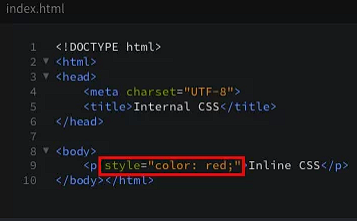
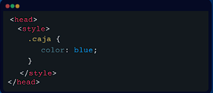
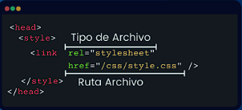
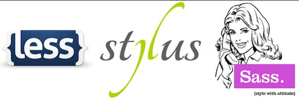
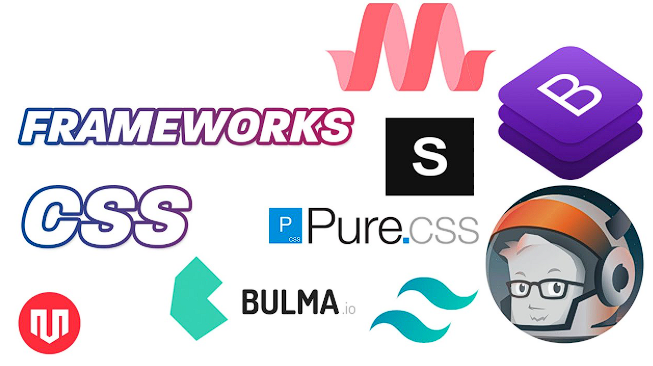
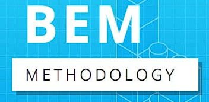

¿Qué es CSS?CSS significa Cascading Style Sheets (Hojas de Estilo en Cascada). Es un lenguaje de estilos que se usa para definir la apariencia visual de un documento HTML: colores, tipografías, tamaños, márgenes, posiciones, animaciones y diseño responsive. CSS no es un lenguaje de programación, es un lenguaje de descripción. Su función es separar el contenido (HTML) del diseño (CSS), lo que facilita el mantenimiento y la reutilización de estilos. ¿Desde qué año existe?
Características principales
Dato clave: el nombre "cascada" viene de que si varias
reglas aplican al mismo elemento, el navegador decide cuál usar siguiendo
un orden jerárquico.
|
Existen varias formas de escribir y distribuir CSS en un proyecto. Estas son las más importantes:
| CSS en Línea (Inline) | |
|---|---|
|
 |
|
| Año 1996 |
Los estilos se escriben directamente en la etiqueta HTML
usando el atributo style.
Ejemplo: |
| CSS Interno (Embedded) | |
|
 |
|
| Año 1996 |
Los estilos se escriben dentro de la etiqueta
<style> en el <head> del documento HTML.
Afecta solo a esa página. |
| CSS Externo (External) | |
|
 |
|
| Año 1996 |
Los estilos se guardan en un archivo .css aparte y se enlazan
con <link>.
Es la forma recomendada: reutilizable en todo el sitio. |
| Preprocesadores | |
|
 |
|
| 2006-actualidad |
Extienden CSS con variables, funciones y anidación. Se compilan a CSS normal.
|
| Frameworks CSS | |
|
 |
|
| 2011-actualidad |
Librerías con estilos predefinidos que aceleran el desarrollo.
|
| Metodologías CSS | |
|
 |
|
| 2010-actualidad |
Convenciones para escribir CSS ordenado y escalable.
Regla de oro: aprende primero CSS puro antes de
saltar a un framework o preprocesador.
|
Este código muestra cómo CSS transforma un HTML simple:
<!DOCTYPE html>
<html lang="es">
<head>
<meta charset="UTF-8">
<title>Ejemplo CSS</title>
<style>
body {
font-family: Arial, sans-serif;
background: linear-gradient(135deg, #667eea, #764ba2);
display: flex;
justify-content: center;
align-items: center;
height: 100vh;
margin: 0;
}
.tarjeta {
background: white;
padding: 30px;
border-radius: 15px;
box-shadow: 0 10px 30px rgba(0, 0, 0, 0.3);
text-align: center;
max-width: 400px;
}
.tarjeta h1 {
color: #764ba2;
margin-bottom: 10px;
}
.tarjeta p {
color: #555;
line-height: 1.6;
}
.boton {
display: inline-block;
margin-top: 15px;
padding: 10px 25px;
background: #667eea;
color: white;
border: none;
border-radius: 25px;
cursor: pointer;
transition: background 0.3s ease;
}
.boton:hover {
background: #764ba2;
}
</style>
</head>
<body>
<div class="tarjeta">
<h1>Hola CSS </h1>
<p>Este diseño fue creado únicamente con CSS: colores, sombras, bordes redondeados y transiciones.</p>
<button class="boton">Haz clic aquí</button>
</div>
</body>
</html>Este diseño fue creado únicamente con CSS: colores, sombras, bordes redondeados y transiciones.
body, .tarjeta, .boton
color, background,
padding
display: flex para centrar elementos.:hover para interacción.transition para animaciones suaves.linear-gradient para fondos con degradado.